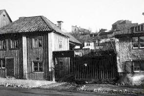
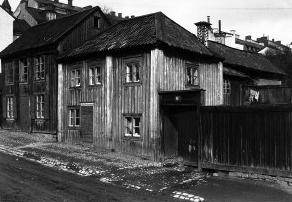
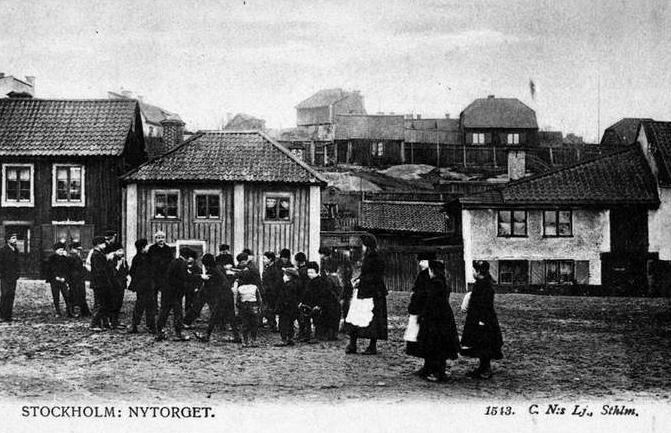

Nytorget 41 år 1905. Sofia kyrka som invigdes 1906 har fortfarande byggnadsställningar kvar. Alldeles nedanför kyrkan skymtar
Borgmästargatan 15 samt strax till vänster därom Renstiernas gata 37.

Nytorget 41 år 1900. "Robert Westins tillhåll"

1912

Nytorget 39-43 år 1900 innan Sofia kyrka byggdes. I bakgrunden Renstiernas gata 32-37